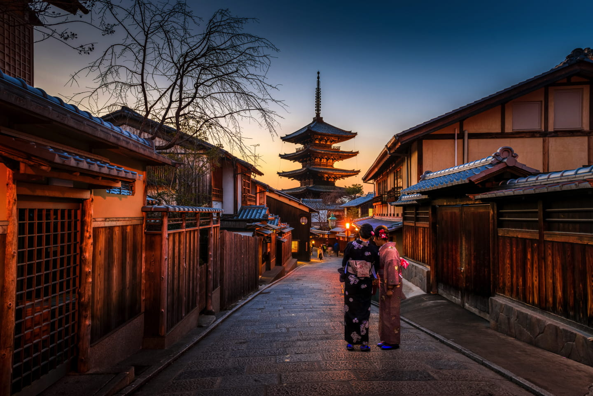
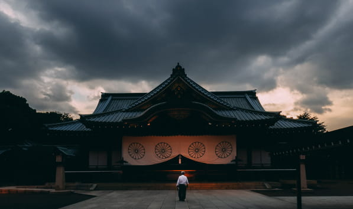
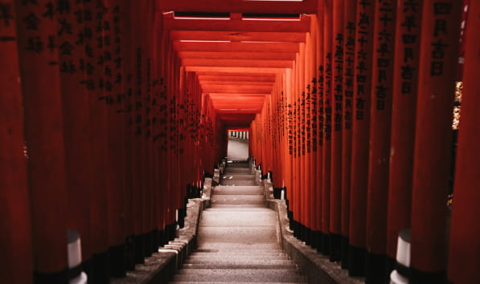
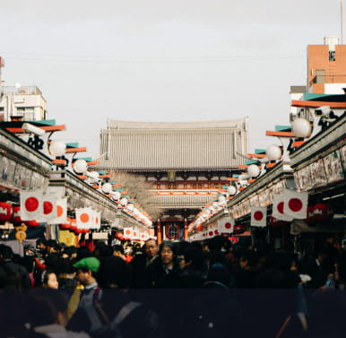
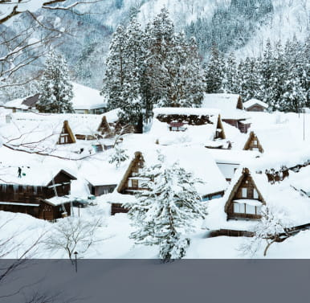
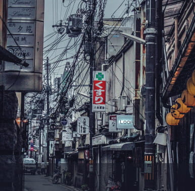
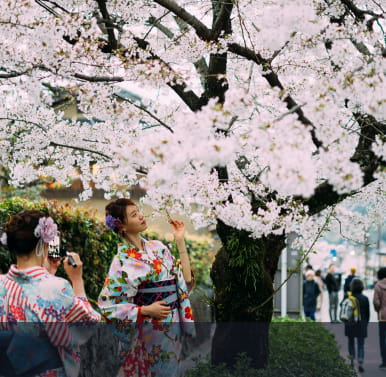
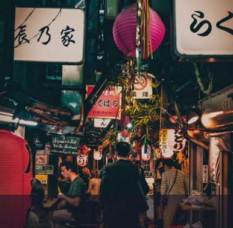

Discover Amazing places in Japan
Read through the variety of topics covered by the All Japan Tours blog staff. Our Japan travel blogs not only provide unique ideas on things to do in Japan but also offer more information on life within Japan.
Benefits of Odigo
Welcome to Odigo!
Respect for Japanese culture is paramount. Understanding customs, festivals, and traditions can help you build trust with the local audience.
LEARN MOREYour Personal Japan Guide
We offer a wide variety of guided walks in Japan… but also happy to organize tailor-made journey according to your requirements. Making Japan come alive.
LEARN MORE
Promoting Local Businesses
Japan is a tech-savvy nation with a strong online presence. Leveraging digital marketing is crucial to reach a broad audience.
LEARN MOREGet inspired for your next trip
VIEW ALL
Prefecture in Focus: Tottori
Check out must-see sights and activities: Tottori Sand Dunes, The Sand Museum, Sacred & Religious Sites, Points of Interest & Landmarks. For personalized recommendations, try our AI trip-planning product.
VIEW PREFECTUREFeatured Neighborhood: Kyoto’s Arashiyama
Arashiyama is a pleasant, touristy district in the western outskirts of Kyoto. The area has been a popular destination since the Heian Period (794-1185), when nobles would enjoy its natural setting. Arashiyama is particularly popular during the cherry blossom and fall color seasons.
VIEW NEIGHBORHOOD
Today top places to visit

NAGOYA
Nagoya is the birthplace of the very first Shogun, Minamoto Yoritomo, and the origins of the Three Unifiers, Oda Nobunaga, Toyotomi Hideyoshi and the Shogun, Tokugawa Ieyasu, along with a host of other famous samurai whose successes forged the strong foundations for modern Japan.
SEE MORE
NIIGATA
Niigata City is a beautiful port city with a population of about 800,000. Although the city allows people to lead their lives with comfort and convenience being a great domestic and international transportation hub, Japan's pristine landscape can still be found and traditional culture remains untouched.
SEE MORE
OSAKA
Osaka is known as the 'Manchester of Japan' as it is an important textile center in Japan. Several geographical factors played a key role in the development of the textile industry in Osaka. Those factors are given below: There was an abundant supply of water for the cotton mills due to River Yodo.
SEE MORESAITAMA
Saitama is known for its well-developed industries and cultures, well -balanced urban and natural environment and convenience. The city of Saitama is the place where Japanese have had a close relationship with foreigners for a long time, and respecting and embracing people from other areas.
SEE MORE
UENO
The home of a number of major museums, Ueno Park is also celebrated in spring for its cherry blossoms and hanami. In recent times the park and its attractions have drawn over ten million visitors a year, making it Japan's most popular city park.
SEE MORE
SHIBUYA
The lively hub of Shibuya is arguably the youth heart and soul of the city, and unmissable if you're visiting the Tokyo area. With world-famous sights including the iconic scramble crossing, this area is a must-see for nightlife and trendy youth culture.
SEE MORE